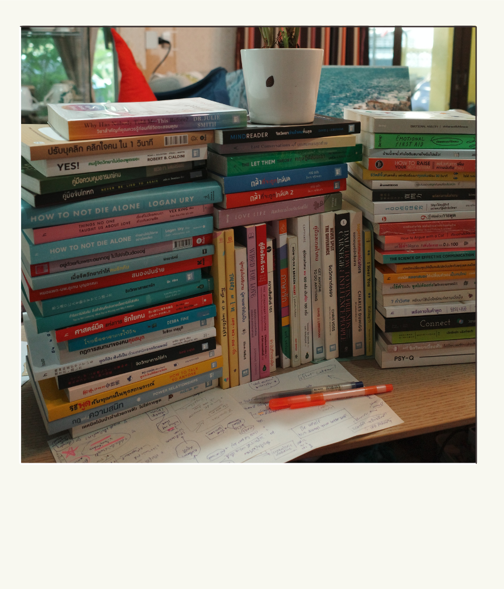

“กองหนังสือที่เริ่มจากคำถามหนึ่งในลิฟต์”
หนังสืออ้างอิงในการทำ Guidebook เล่มนี้
แตะเพื่อดูภาพใหญ่
“กองหนังสือที่เริ่มจากคำถามหนึ่งในลิฟต์”
หนังสืออ้างอิงในการทำ Guidebook เล่มนี้
จุดเริ่มต้นของ Guidebook เล่มนี้
คือบทสนทนาที่ผมไม่ได้เริ่ม
ช่วงมหาวิทยาลัย มีคนที่ผมอยากรู้จักมาก โอกาสอยู่ตรงหน้าเมื่อเราอยู่ในลิฟต์ตัวเดียวกันสองคน แต่ผมกลับไม่กล้าแม้แต่จะทัก สุดท้ายประตูลิฟต์เปิด แล้วโอกาสนั้นก็ผ่านไป
“ถ้าอยากรู้จักใครสักคน
เราควรเริ่มยังไงกันแน่?”
หลังจากวันนั้น ผมเริ่มซื้อหนังสือการสื่อสารมาศึกษา นำองค์ความรู้ด้านความสัมพันธ์และจิตวิทยามาทดลองกับบทสนทนาจริง
ผมเคยคิดว่า การได้รู้จักใครสักคน
ต้องรอจังหวะ
จนได้รู้ว่า…
“เราสร้างจังหวะนั้นขึ้นมาเองได้”
จากความสงสัยหนึ่งครั้ง
กลายเป็นการศึกษาหลายปี
แล้วผมก็ไม่ได้หยุดอยู่แค่คำถามว่า “ควรจะทักยังไงดี”
ผมอยากเข้าใจต่อว่า ถ้าเริ่มคุยแล้ว เราจะพาบทสนทนาไปต่อยังไง เลยค่อย ๆ ศึกษาเรื่องการสื่อสาร ความสัมพันธ์ จิตวิทยา และพฤติกรรมมนุษย์มากขึ้น
จากสองเล่มก็เริ่มเป็นสิบ จากสิบก็กลายเป็นหลายสิบเล่ม... หันมาดูอีกที แทบไม่มีที่เก็บแล้วครับ 555
เพื่อให้คุณไม่ต้องเริ่มจากศูนย์เหมือนผม
ไม่ต้องไล่งานวิจัยทุกชิ้น
และไม่ต้องลองผิดลองถูกทุกอย่างด้วยตัวเอง
ผมคัดสิ่งที่น่าสนใจมาลองกับ ‘บทสนทนาจริง’
แล้วเก็บเฉพาะสิ่งที่ใช้ได้
ภายในเวลาอ่านไม่ถึง 1 ชั่วโมง
อ้อ...เกือบลืมบอกไปครับ
เพื่อนคนนั้นที่ผมไม่กล้าแม้แต่จะทักในลิฟต์วันนั้น
ทุกวันนี้เราอยู่แก๊งเดียวกัน
และเป็นเพื่อนที่สนิทกันมากครับ
พอนึกย้อนกลับไป
ผมก็ยังรู้สึกดีอยู่เลยครับ
ที่วันนั้นผมตัดสินใจแก้เรื่องนี้